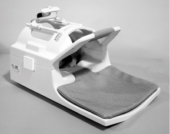
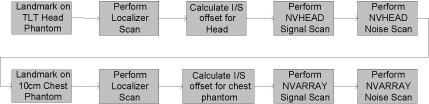
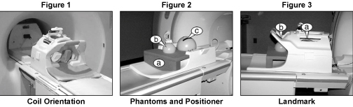
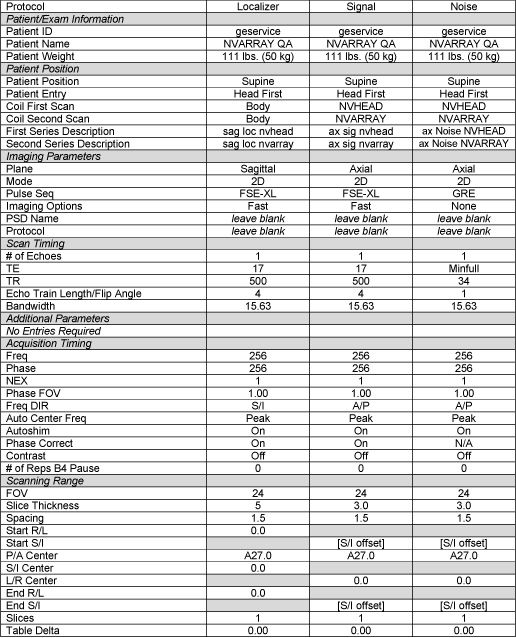
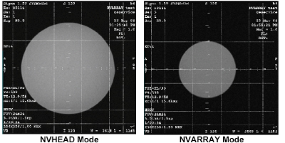
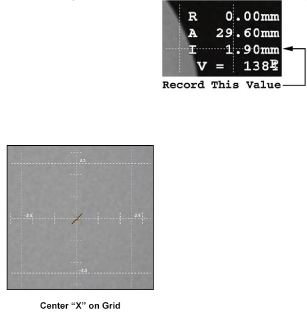
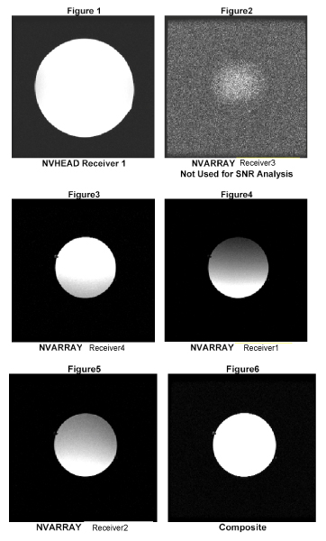
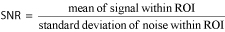
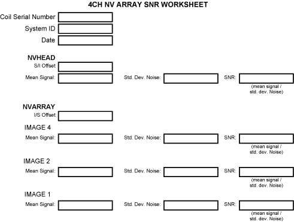

- 00000018WIA30AF1F20GYZ
- id_131068701.1
- Jul 6, 2019 12:03:29 AM
4ch Neurovascular Array for HDe 1.5T
INTRODUCTION
Product Identification and Shipping List
This is a service manual for the GE Signa 1.5T Open Neurovascular Array.

| Description | GE Part # | Invivo Part # | Qty |
| Neurovascular Assembly with Cable | 5145566-2 | 106452 | 1 |
| Neurovascular Operator Manual | 5145566-3 | 500189 | 1 |
| Phantom Positioner | 2293668-7 | 101655 | 1 |
| Wedge Pad | E8800NB | 101407 | 2 |
| Pad | E8800NC | 101408 | 1 |
Compatibility
This coil is compatible with the following hardware configurations:
-
Signa HDe 1.5T System
Related Documentation
1.5T Open Neurovascular Array Operator Manual, 5145566-3
Environmental Requirements
Storage Requirements
The Coil should be stored in the Scanner Room.
Dimensions
1.5T Coil Dimension: 679.5 mm x 394.0 mm x 415.9 mm (26.75 in x 15.50 in x 16.375 in)
Phantom Holder 453.6 mm x 381.0 mm x 142.2 mm (17.86 in x 15.00 in x 5.60 in)
Weight
1.5T Coil Weight: 9.77 Kg (21.5 lb.)
Theory of Operation
The Phased Array Neurovascular coil consists of a top and bottom piece which must be securely fastened together for safe effective operation. The coil utilizes four channels of the multi-coil system. The head channel on S6 is a quadrature saddle coil which uses the combiner labeled (1). The neck coverage comes from three channels, one for the anterior neck and the other two for the posterior neck. The coils are tuned/matched and decoupled through the circuits labeled (2). Decoupling is actively controlled using the system bias current and trap circuits which produce high impedance in the coil loops when PIN diodes are forward biased. If bias current is not available due to a system failure, the traps will be activated passively by the RF power during transmission. These trap circuits ensure safe artifact free operation. Phase shift circuits (labeled {3}) are employed to improve inductive isolation using the system preamplifier impedance mismatch. Item 4 is the system interface which defines the pins associated with each coil channel.
SETUP AND CALIBRATION
Coil Installation
The names for this coil are: NVHEAD, NVARRAY
Add the coil using the Configuration File Manager. Refer to: Service Methods CD; System Level Procedures; Software Utilities.
If the coil does not exist in Coil Config File refer to the Adding New Coils to Config File Manager procedure and use the coil configuration information in Section 7-3 of this manual.
Installation Functional Checks
-
Perform system level Signal to Noise Check. Refer to Service Methods CD; System Level Procedures; Functional Checks; Signal to Noise Check.
-
Perform Section 3 - Coil Imaging Performance Verification.
Periodic Quality Assurance Check
On a periodic basis, such as during planned maintenance, perform the quality assurance checks as outlined below to ensure the coils is operating properly.
-
Check external cable for cracks or cuts.
-
Perform Section 3 - Coil Imaging Performance Verification and record data values in Data Sheet.
FUNCTIONAL CHECKS
Scanner Verification
Perform system level Signal to Noise Check. Refer to Service Methods CD; System Level Procedures; Functional Checks; Signal to Noise Check.
Coil Imaging Performance Verification
Tools Required
| Description | GE Part # | Supplier Part # | Qty |
| 18cm diameter spherical TLT Phantom | 46-265826G6 | N/A | 1 |
| 10cm diameter spherical phantom | 46-317586G1 | N/A | 1 |
| Phantom Positioner | 2293668-7 | 101655 | 1 |
Explanation of Procedure
For evaluation of coil performance, images will be acquired in the axial plane. The following protocol shall be used for coil comparison and image quality analysis.
The NV-Array has two sections controlled by the coil configuration files: NVHEAD, and NVARRAY. The protocol given below shall be run using NVHEAD and NVARRAY on the 2 phantoms . The final report will include the SNR analyses on axial images.
Individual element performance: The NV-Array coil contains four elements, each of those corresponding to its own receiver. Using the protocol described here, signal should appear on all four receivers. The user may check individual element performance using Manual Prescan. When the Manual Prescan window appears, click on Scan T/R. In the graph at the right, each receiver should show the projection of the phantom along the phase direction for its corresponding element.
Use the following procedures to acquire the sagittal localizer, axial signal, and axial noise images. Complete this procedure TWICE: once for NVHEAD mode and once for NVARRAY mode. The procedures for NVHEAD and NVARRAY are nearly identical, with any differences noted in the procedures and protocols listed below. Perform the procedures in the order shown in Procedure Flowchart – Figure 2.

Localizer Scan
The following procedure is specific to the Signa HDe 1.5T system. Perform a sagittal localizer scan in order to determine the center of the phantom.
1. From the Scan Desktop, start new scan by selecting [New Pt]; set Patient ID to “geservice” and Patient Weight to “111” pounds. Click [Patient Position] to open the protocols window.
2. Remove any other surface coils from the cradle. Referring to Figure 1, place the Neurovascular coil on the patient table with the cable oriented into the magnet. Lock the base into the slots in the table. Plug the phased array plug into the phased array port on the Signa system.
Unlatch and remove the coil top, placing it in a safe location. Place the phantom positioner into the coil as seen in Figure 2a. Then place the 10cm spherical phantom and the 18cm spherical TLT phantom onto the phantom positioner as seen in Figure 2b and 2c, respectively. Replace and latch the coil top.

3. At the magnet, press “Alignment Light” button to turn on the light. Move the cradle to align the coil to the alignment lights as follows:
-
For the first localizer scan, landmark in the center of the Head TLT phantom, as indicated in Figure 3a. [use NVHEAD mode]
-
For the second localizer scan, landmark in the center of the 10cm phantom, as indicated in Figure 3b. [use NVARRAY mode]
4. Press the “Landmark” button to landmark the alignment.
5. Move the coil to scan position by pushing the “Move to Scan” button, ensuring the cable does not get snagged.
6. At the console, set the protocols using the values in the Localizer protocol column of Figure 4.

7. Select [Save Series] then [Prepare to Scan]. Select [Auto Prescan]. When auto prescan is complete, select [Scan].
Determining The I/S Center Location of the Phantom
In the image browser, set the grid settings as listed in Table 3-2-4, using [User Prefs] -> [Grid prefs].
| Matrix Lines | On |
| Line Style | Dotted |
| Grid Spacing | 50mm |
| Tick Spacing | 10mm |
| Tick Length | 5mm |
Turn on the grid. Left click on the center of the grid and move until centered on the phantom image. (Window level if necessary to make the grid visible) See Figure 5 for an example of a centered grid.

Click the user interface button [Measure], select the “X”, and adjust its location until the “X” is centered on the grid. See Figure 6

Record the S/I location of the “X” as “S/I Offset” in the SNR worksheet. The S/I location is listed on the right side of the image display, as shown in Figure 6. This value will be used in the signal and noise scans to choose the slice location.
Signal Scan
Perform the signal scan using the values in the Signal protocol column of Table 3-2-6 and the S/I location recorded in the localizer scan procedure.
-
Select [Save Series] then [Prepare to Scan].
-
Prior to the scan, open the [Display CVs] menu under Research Operations. To obtain signal images for individual receivers, set “saveinter” CV to 1.
-
Select [Auto Prescan]. Record the R1 R2 and TG values obtained, then select [Scan].
Noise Scan
Perform the noise scan using the values in the Noise protocol column of Table 3-2-6. Do not change the prescan parameters before running this scan.
-
Select [Save Series] then [Prepare to Scan].
-
Prior to the scan, open the [Display CVs] menu under Research Operations. To obtain the noise images, set the “saveinter”, “do_noise”, and “rh_format” CVs to 1.
-
Select [Manual Prescan]. Verify that R1, R2, TG, and Bandwidth have not changed from the previously completed signal scan. Select [Done] and exit without changing any parameters. Select [Scan].
SNR Image Analysis
Regions of interest in both signal and noise images can be measured directly in the image browser. Click the user interface button Measure, select the circular or rectangular shape, and adjust its size and orientation when the shape is displayed in the selected image. Mean, standard deviation, and area of the ROI will appear in the lower right corner of the image. Examples of typical Receiver Images are shown in Figures 1 through 6 below. These images represent the order of images on an HDe 1.5T system.

SNR Measurement
Figure5 Figure6 NVARRAY Receiver 4 Composite For the signal measurement, choose a circular ROI covering the appropriate section of the phantom for the receiver channel being scanned. For each signal series: 3-2-9 Decision Criteria Receiver 2
Center a grid on the phantom image. Using the [Measure] tool, set a circular ROI with its center at the center of the grid. Enlarge the ROI to the following size:
-
NVHEAD 15cm diameter
-
NVARRAY 8cm diameter
Record the mean signal for each receiver in the SNR worksheet.
For each noise image (1 from the NVHEAD receiver and 3 from the active NVARRAY receivers, measure the noise with a 20cm square. Record the standard deviation of the noise for each receiver in the SNR worksheet.
The SNR shall be calculated using the signal to noise ratios of the individual receiver channels. Individual receiver SNR is defined as the mean of data within the signal ROI divided by the standard deviation of data within the noise ROI:

Decision Criteria
Overall SNR performance:
The SNR measurements shall meet the following lower spec limits:
-
NVHEAD 135
-
NVARRAY Receiver4 61
-
NVARRAY Receiver1 44
-
NVARRAY Receiver2 44
MAINTENANCE
| Warning | |
|---|---|
| CAUTION | |
|---|---|
The Open Neurovascular Array pad may be cleaned by wiping with a cloth dampened with a solution of 30% isopropyl alcohol and 70% tap water or a 10% Bleach solution.
RENEWAL PARTS
Field Replaceable Units
| Name | GE Part No | Invivo No |
| 1.5T HD Neurovascular coil with cable | 5145566-2 | 870246 |
| cable | 5145566-5 | 870247 |
| Phantom Positioner | 2293668-7 | 101655 |
| Latches | 2225176-6 | 870244 |
Other Replaceable Accessories
| Name | GE Accessory Part No. | Invivo No |
| Wedge Pad | E8800NB | 101407 |
| Sternum Pad | E8800NC | 101408 |
SNR Worksheet
